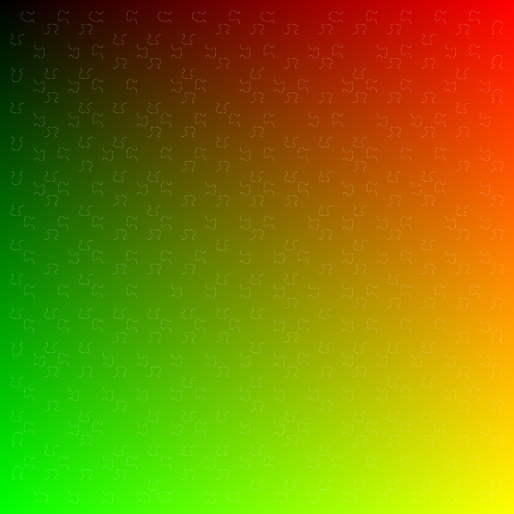
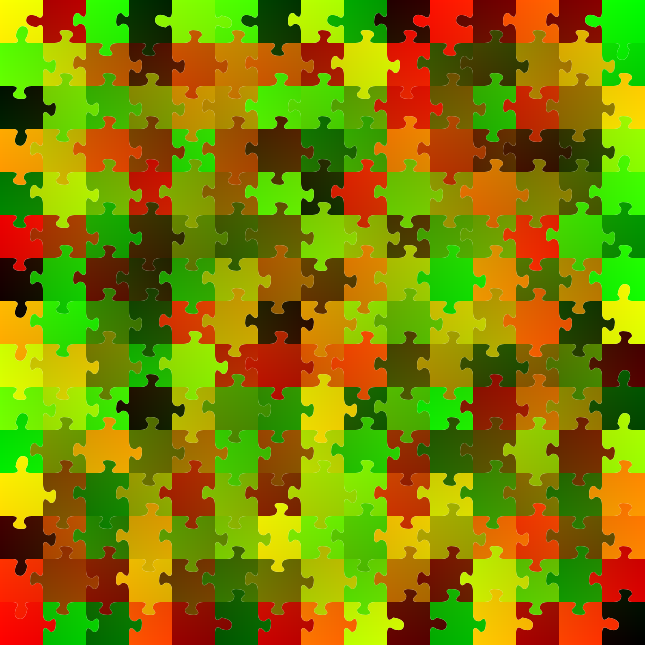

Project Overview
Most jigsaw puzzles have multiple trivial solutions where pieces can be placed anywhere without forming a coherent image, or they have a single unique solution that creates the intended picture. This project explores a fascinating middle ground: creating jigsaw puzzles that can be solved in exactly two non-trivial ways, each forming a meaningful arrangement.
Inspired by Matt Parkers "How can a jigsaw have two distinct solutions" ( on Youtube) recent advances in diffusion-based image generation and the work of Ryan Burgert et al. on diffusion illusions, this project tackles the computational challenge of generating larger double-solution jigsaw puzzles than previously possible.
Generated Puzzle Solutions
Below are the two unique solutions for a 15×15 jigsaw puzzle generated using this algorithm:
Solution 1
Solution 2 (Mapped)
Note: These represent the only two possible arrangements for this specific set of puzzle pieces, demonstrating the mathematical precision required to create such constrained systems.
Diffusion Illusion Results
After generating the double-solution puzzle, I applied diffusion illusion algorithms to create visual images that correspond to each solution. While challenging due to the complexity of mapping two distinct images onto a 15×15 grid within 512×512 pixel constraints, the results demonstrate the potential of this approach:
Van Gogh Style - Solution 1
Van Gogh Style - Solution 2
Technical Approach
This project extends beyond Matt Parker's brute-force approach (limited to ~6×6 puzzles) by implementing a sophisticated algorithm capable of generating puzzles up to 15×15 pieces. The solution combines multiple computational techniques:
Initial Puzzle Generation
Create a random valid jigsaw puzzle with a predetermined number of initialized edge connections.
SAT Encoding
Transform the puzzle into a Boolean satisfiability problem where each piece has variables for:
- Connection types for each edge (4 × number of connection types)
- Possible positions on the grid
- Constraints ensuring valid piece placement and connectivity
Constraint Optimization
Add sophisticated constraints to prevent trivial solutions:
- Disallow global rotations
- Prevent simple row/column swaps
- Ensure meaningful visual differences between solutions
Solution Verification
Use pySAT solver to find the second solution, then verify no third solution exists, ensuring the puzzle has exactly two valid arrangements.
Visualization Mapping
Generate UV-identity maps for the solutions to enable diffusion illusion processing and visual representation.
Challenges & Achievements
Scale Improvement
Extended puzzle generation capability from 6×6 to 15×15 pieces, representing a 6.25× increase in complexity.
Algorithm Innovation
Developed novel constraint patterns to ensure "interesting" second solutions rather than trivial variations.
Performance Optimization
Achieved overnight computation on standard laptop hardware for complex 15×15 puzzles.
Mathematical Rigor
Implemented verification systems to guarantee exactly two solutions exist for each generated puzzle.
Future Developments
- Algorithm Documentation: Improve code documentation and constraint explanation
- Shotgun Edge Assembly: Implement initial puzzle generation using research-backed methods
- Parameter Optimization: Fine-tune hyperparameters for better solution diversity
- Scalability: Explore techniques for even larger puzzle dimensions
- Visual Enhancement: Improve diffusion illusion quality for complex imagery
Research Foundation
This work builds upon established mathematical research in jigsaw puzzle theory:
Anders Martinsson (2019)
"A linear threshold for uniqueness of solutions to random jigsaw puzzles"
Combinatorics, Probability and Computing, 28(2)
arXiv:1701.04813Anders Martinsson (2016)
"Shotgun edge assembly of random jigsaw puzzles"
arXiv preprint
arXiv:1605.03086